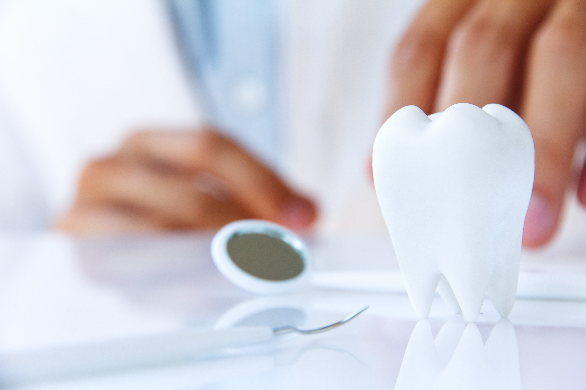
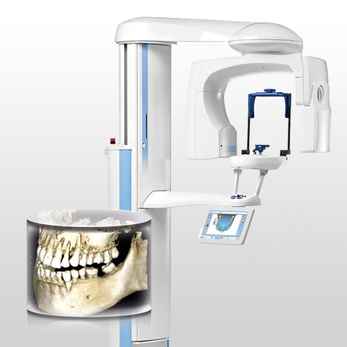
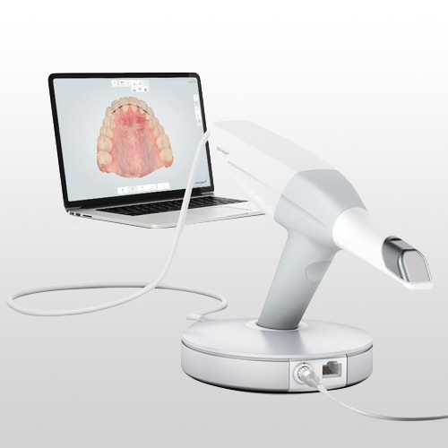
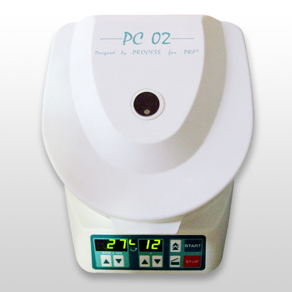
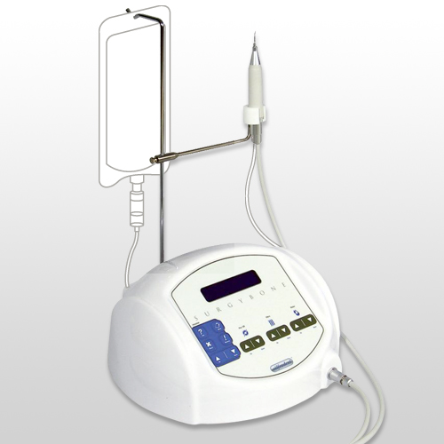
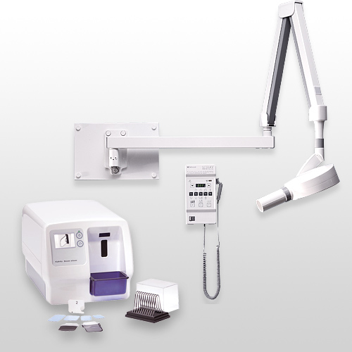
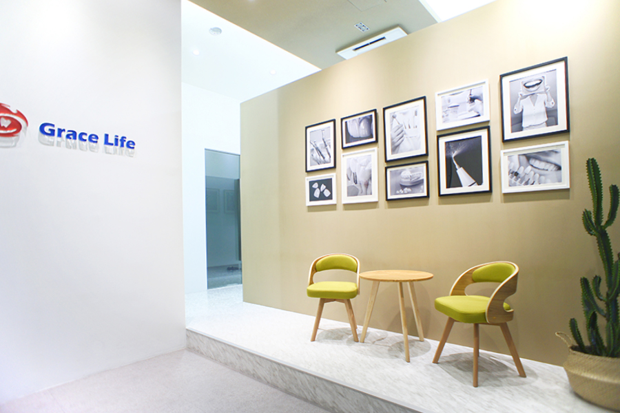

牙醫知識 Dental Knowledge
掌握治療前後的關鍵照護觀念
整理治療前後常見問題、日常照護重點與專科治療觀念，幫助您在看診前更安心，也讓治療後的保養更有方向。

最新醫療知識

門牙有縫怎麼辦？牙縫太大想補牙縫有哪些治療方式？
整理樹脂補牙縫、陶瓷貼片、全瓷冠與矯正治療的適用情況。閱讀更多...

為什麼你需要顯微根管治療？從原理到優勢的懶人包
顯微視野能協助處理複雜根管，提高保存自然牙的機會。閱讀更多...

全瓷冠完成後，這 5 件事請一定要知道
完成全瓷冠後，飲食、清潔與咬合觀察都會影響假牙穩定。閱讀更多...

All-On-4 手術前後注意事項
整理術前健康檢查、特殊用藥告知、麻醉恢復與返家安全提醒。閱讀更多...
隱適美配戴時間不足會怎樣？矯正進度常見問題
透明牙套需要足夠配戴時間，才能讓牙齒依計畫穩定移動。閱讀更多...

冷光美白會傷牙嗎？治療前後的敏感照護重點
了解美白前評估、術後敏感與飲食習慣，讓牙色更穩定。閱讀更多...
牙齦流血只是刷太用力嗎？牙周病早期警訊整理
牙齦出血、腫脹與口臭可能是牙周警訊，需及早檢查。閱讀更多...

陶瓷貼片和全瓷冠差在哪？美觀修復前的選擇指南
比較貼片與牙冠的修磨範圍、適用情境與美觀修復差異。閱讀更多...

植牙為什麼要拍 3D 電腦斷層？影像檢查能看見什麼
3D 影像可評估骨質、神經與鼻竇位置，提升植牙安全性。閱讀更多...

全瓷冠、全鋯冠、金屬燒瓷冠怎麼選？材質差異一次看
不同假牙材質在透光、強度與適用位置上各有取捨。閱讀更多...

口掃和傳統印模有什麼不同？數位取模的舒適與精準
數位口掃能減少印模不適，也讓修復設計流程更有效率。閱讀更多...
孩子第一次看牙要準備什麼？降低緊張感的陪診方式
初次看牙前建立正向期待，有助孩子熟悉診間與醫師。閱讀更多...
牙齒越磨越短？磨牙修復與咬合重建完整說明
長期磨牙可能造成牙齒耗損，需評估咬合與保護方式。閱讀更多...

牙周再生治療是什麼？骨缺損與牙齦修復的可能性
牙周破壞後可依缺損條件評估再生治療與穩定維護。閱讀更多...
微笑曲線怎麼設計？前牙美學修復會考量哪些細節
前牙美學會整合臉型、唇線、牙色與比例，打造自然笑容。閱讀更多...

植牙一定要補骨嗎？骨量不足時常見處理方式
當骨量不足時，可依條件評估補骨、鼻竇增高等方式。閱讀更多...

多久洗牙一次才夠？不同口腔狀況的回診頻率建議
洗牙頻率會依牙周、清潔狀況與治療需求調整，不一定相同。閱讀更多...

蛀牙不痛就不用補嗎？牙齒疼痛前可能已經在變化
蛀牙早期可能無痛，定期檢查能提早發現並保留齒質。閱讀更多...

拔牙後怎麼照顧？止血、飲食與清潔注意事項
拔牙後照護重點包含止血、冰敷、飲食與傷口清潔。閱讀更多...

第一次諮詢牙科療程，該怎麼描述自己的需求？
諮詢時清楚說明困擾、期待與病史，能幫助醫師判斷。閱讀更多...
開始您的微笑蛻變之旅
預約初診諮詢，由醫師親自評估您的狀況，為您規劃最適合的全瓷冠修復方案。無需承擔任何壓力，帶著您的疑問來，我們一起找到最好的解答。